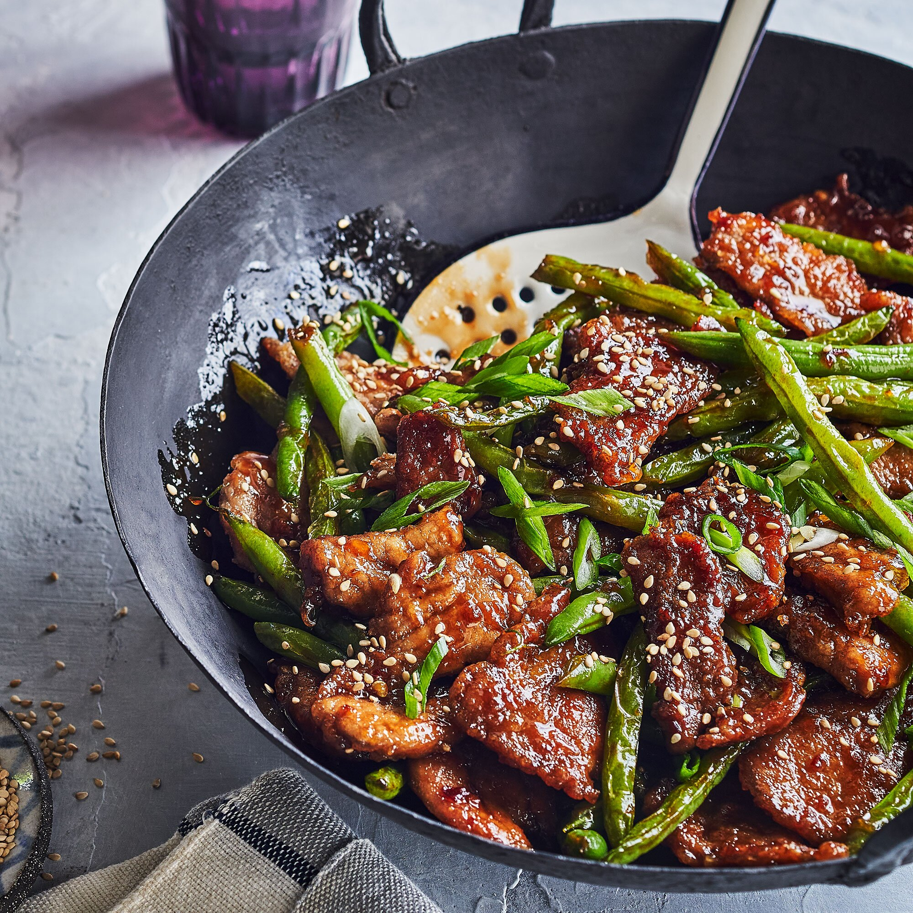

Stir Fry

Description
Stir-fry is a very versatile, customizable dish that is very simple and easy to learn! With just a few simple steps, you are going to be
able to master stir-fry and make it a staple in any dish you serve with it or by itself. The only requirement is that you have a good wok or
frying pan because it is essential in the process of making stir-fry!
Ingredients
- General Tso's sauce 6oz
- Onion 10oz
- Vegetable Oil 4 tbsp
- Chicken/Beef/Pork/other 10oz
- Green or Red pepper 10oz
- Broccoli 12oz
- Rice 2cups
- Eggs 3
Steps
- Boil rice. Chop Onions, pepper, and meat to the size of your liking.
- Set heat to medium and add in oil. First, stir fry meat until browned. Boil broccoli and set aside.
- Add in all vegetables and stir fry until they are tender. Approx. 7min
- Add in rice and stir-fry for 2 minutes.
- Push rice/vegetables to one side of the pan and add in one more tbsp of oil, crack, and scramble eggs.
- Bring rice and eggs together and add in sauce. stir-fry for an additional minute.
- Bring off heat, and enjoy!